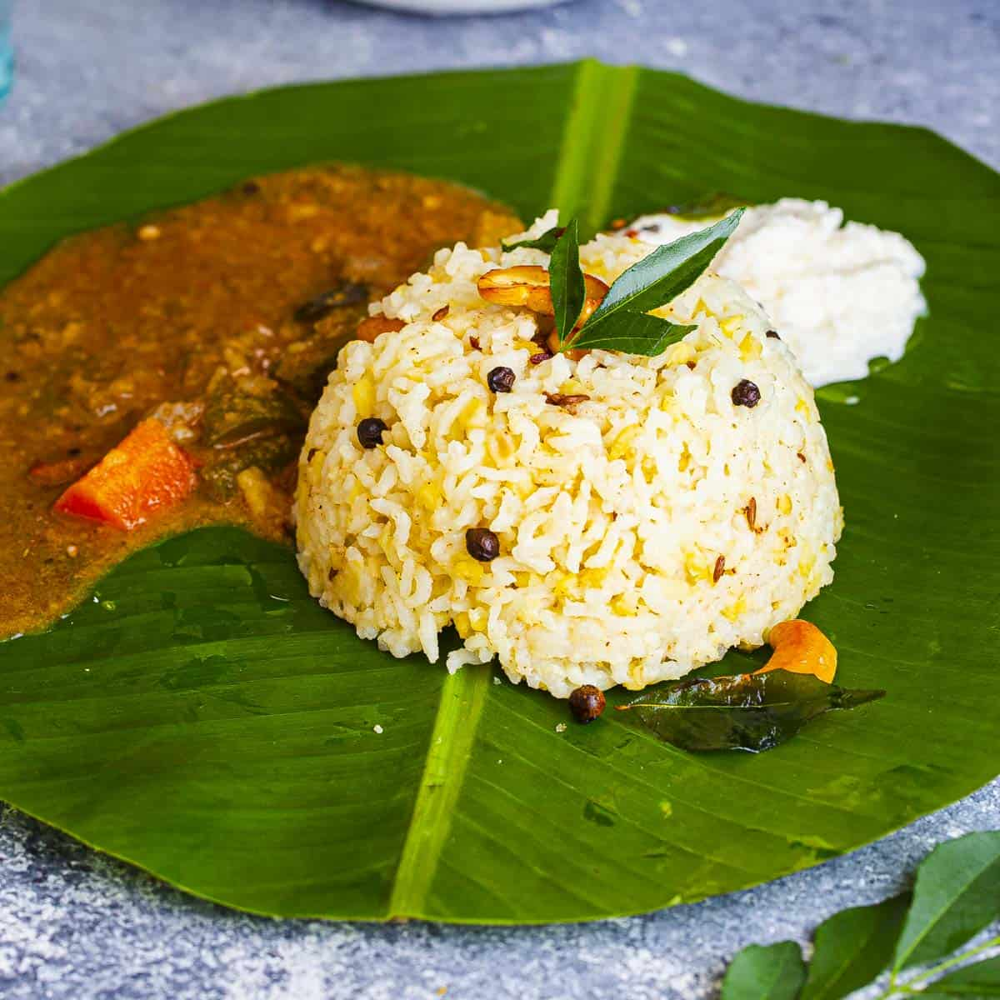

Ven Pongal Recipe

Description:
Ven Pongal is a popular, savory South Indian porridge made from rice and split yellow moong dal. Cooked until soft and creamy, it is generously seasoned with ghee, black pepper, cumin, ginger, and cashews. It is a beloved staple traditionally served hot for breakfast with coconut chutney or sambar.
Key Ingredients:
- Rice: \(\frac{1}{2}\) cup short-grain rice (like Sona Masoori or raw rice)
- Moong Dal: \(\frac{1}{4}\) cup split yellow moong dal
- Water: 3 to \(3\frac{1}{2}\) cups (for a soft, porridge-like consistency)
- Ghee: 3 to 4 tablespoons (essential for flavor)
- Aromatics & Spices: 1 teaspoon whole black peppercorns (slightly crushed), 1 teaspoon cumin seeds, and 1 teaspoon finely chopped fresh ginger
- Garnish: 8-10 cashews and a sprig of fresh curry leaves
- Other: Pinch of asafoetida (hing) and salt to taste
Step-by-Step Instructions:
Roast and Wash the Grains
Dry roast the moong dal in a pressure cooker on low flame until it turns lightly golden and aromatic. Add the rice and roast for another minute. Rinse the rice and dal thoroughly together under running water and drain.Cook the Pongal
Return the rinsed mixture to the pressure cooker. Pour in 3 cups of water and add salt. Pressure cook on a medium flame for about 4 to 5 whistles. Turn off the heat and let the pressure release naturally. Open the lid and mash the cooked rice and dal lightly with the back of a ladle until it reaches a soft, gooey consistency.Prepare the Tempering (Tadka)
Heat 3 tablespoons of ghee in a small pan on low heat. Add the cashew nuts and fry until they turn golden brown, then temporarily remove or set aside. In the same ghee, add the crushed peppercorns and let them crackle. Add the cumin seeds, chopped ginger, a pinch of asafoetida (hing), and curry leaves. Sauté until aromatic, then add the fried cashews back in.Combine and Serve
Pour the prepared ghee and spice mixture over the cooked rice and dal. Mix thoroughly so the flavors are well absorbed. Cover and let it sit for a minute before serving hot with sides like Coconut Chutney or Tiffin Sambar.
Back to home page